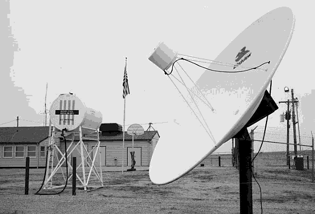

Temporal SurveillanceTemporal Surveillance
Temporal SurveillanceTemporal Surveillance

The newest of the FTAA's divisions, Temporal Surveillance (TS) is charged with intelligence and counterintelligence information gathering from alternate eras. TS monitors and collects media broadcasts and publications from upstream and downstream chronographic eras which is then analyzed and utilized by the FTAA's various other divisions.



Mission | Programs and Operations | Employee Data Storage | Index
Need help? Have a temporal policy question? Email us at ftaaweb@stjc.edu or by phone at (202) 738-9235.
Last Updated: November 19, 1993
This site is best viewed using the NCSA Mosaic WWW browser.